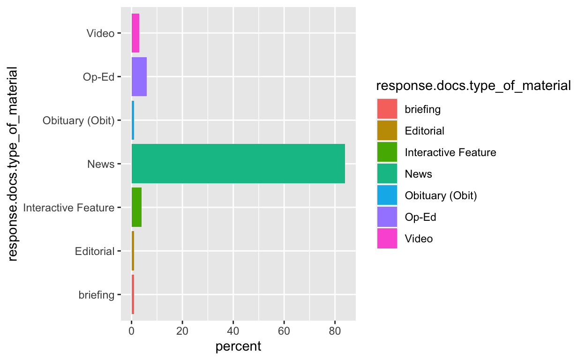
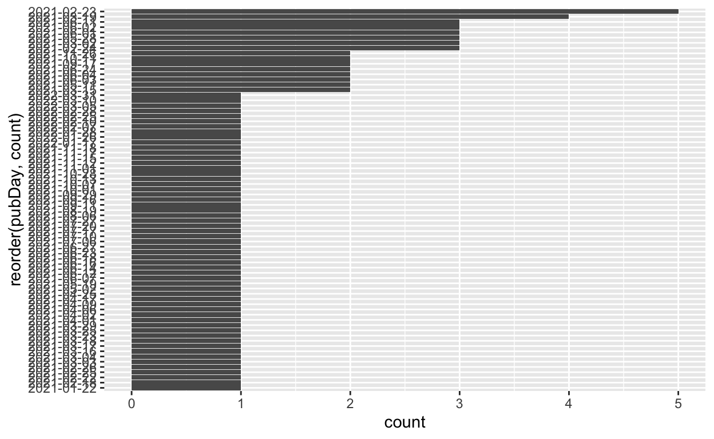

This website was made with distill by RStudio.
#create an object called x with the results of our query ("haaland")
class(x) #what type of object is x?
#flatten the JSON object, then convert to a data frame
x <- fromJSON("http://api.nytimes.com/svc/search/v2/articlesearch.json?q=haaland&api-key=NTKBHbsb6XFEkGymGumAiba7n3uBvs8V", flatten = TRUE) %>% #the string following "key=" is the
data.frame()
#Inspect our data
class(x) #now what is it?
dim(x) # how big is it?
names(x) # what variables are we working with?
saveRDS(x, "initquery.RDS")
x <- readRDS("nytDat.rds")
#response.xxx.xxx... is legacy of the json nested hierarchy
term <- "Haaland" # Need to use + to string together separate words
begin_date <- "20210120"
end_date <- "20220401"
baseurl <- paste0("http://api.nytimes.com/svc/search/v2/articlesearch.json?q=",term,
"&begin_date=",begin_date,"&end_date=",end_date,
"&facet_filter=true&api-key=","NTKBHbsb6XFEkGymGumAiba7n3uBvs8V", sep="")
#examine our query url
baseurl
[1] "http://api.nytimes.com/svc/search/v2/articlesearch.json?q=Haaland&begin_date=20210120&end_date=20220401&facet_filter=true&api-key=NTKBHbsb6XFEkGymGumAiba7n3uBvs8V" initialQuery <- fromJSON(baseurl)
maxPages <- round((initialQuery$response$meta$hits[1] / 10)-1)
pages <- list()
for(i in 0:maxPages){
nytSearch <- fromJSON(paste0(baseurl, "&page=", i), flatten = TRUE) %>% data.frame()
message("Retrieving page ", i)
pages[[i+1]] <- nytSearch
Sys.sleep(1)
}
class(nytSearch)
nytDat <- rbind_pages(pages)
nytDat <- as_tibble(nytDat)
nytDat <- read.csv("nytDat.csv")
nytDat %>%
group_by(response.docs.type_of_material) %>%
summarize(count=n()) %>%
mutate(percent = (count / sum(count))*100) %>%
ggplot() +
geom_bar(aes(y=percent, x=response.docs.type_of_material, fill=response.docs.type_of_material), stat = "identity") + coord_flip()

nytDat %>%
mutate(pubDay=gsub("T.*","",response.docs.pub_date)) %>%
group_by(pubDay) %>%
summarise(count=n()) %>%
filter(count >= 2) %>%
ggplot() +
geom_bar(aes(x=reorder(pubDay, count), y=count), stat="identity") + coord_flip()

#The 6th column, "response.doc.lead_paragraph", is the one we want here
names(nytDat)
[1] "status"
[2] "copyright"
[3] "response.docs.abstract"
[4] "response.docs.web_url"
[5] "response.docs.snippet"
[6] "response.docs.lead_paragraph"
[7] "response.docs.source"
[8] "response.docs.multimedia"
[9] "response.docs.keywords"
[10] "response.docs.pub_date"
[11] "response.docs.document_type"
[12] "response.docs.news_desk"
[13] "response.docs.section_name"
[14] "response.docs.type_of_material"
[15] "response.docs._id"
[16] "response.docs.word_count"
[17] "response.docs.uri"
[18] "response.docs.print_section"
[19] "response.docs.print_page"
[20] "response.docs.subsection_name"
[21] "response.docs.headline.main"
[22] "response.docs.headline.kicker"
[23] "response.docs.headline.content_kicker"
[24] "response.docs.headline.print_headline"
[25] "response.docs.headline.name"
[26] "response.docs.headline.seo"
[27] "response.docs.headline.sub"
[28] "response.docs.byline.original"
[29] "response.docs.byline.person"
[30] "response.docs.byline.organization"
[31] "response.meta.hits"
[32] "response.meta.offset"
[33] "response.meta.time" #inspect the list of tokens (words)
tokenized$word
[1] "map" "dots" "resembling"
[4] "scattergram" "america" "snow"
[7] "covered" "pinnacles" "remote"
[10] "islands" "washington" "united"
[13] "government" "netted" "record"
[16] "4.37" "billion" "friday"
[19] "sale" "offshore" "wind"
[22] "leases" "coasts" "york"
[25] "jersey" "major" "step"
[28] "biden" "administration’s" "goal"
[31] "ushering" "future" "powered"
[34] "renewable" "energy" "day"
[37] "incoming" "manager" "club"
[40] "overwhelming" "entire" "squad"
[43] "players" "meet" "win"
[46] "staff" "nervous" "intentions"
[49] "fearful" "future" "hold"
[52] "convince" "command" "washington"
[55] "interior" "department" "friday"
[58] "recommended" "federal" "government"
[61] "raise" "fees" "oil"
[64] "gas" "companies" "pay"
[67] "drill" "public" "lands"
[70] "increase" "rent" "royalty"
[73] "rates" "1920" "washington"
[76] "decision" "trump" "administration"
[79] "move" "headquarters" "bureau"
[82] "land" "management" "grand"
[85] "junction" "colo" "washington"
[88] "left" "agency" "vacancy"
[91] "rates" "veteran" "employees"
[94] "african" "americans" "quit"
[97] "relocate" "government" "watchdog"
[100] "report" "issued" "week"
[103] "darkened" "erling" "haaland"
[106] "watching" "injury" "meant"
[109] "field" "norway’s" "significant"
[112] "match" "20" "netherlands"
[115] "return" "partial" "lockdown"
[118] "weekend" "meant" "game"
[121] "played" "closed" "doors"
[124] "support" "national" "team"
[127] "stands" "washington" "president"
[130] "biden" "announced" "monday"
[133] "administration" "moving" "block"
[136] "federal" "oil" "gas"
[139] "leasing" "10" "mile"
[142] "radius" "chaco" "canyon"
[145] "mexico" "nation’s" "culturally"
[148] "significant" "native" "american"
[151] "sites" "deb" "haaland"
[154] "president" "biden’s" "secretary"
[157] "interior" "year’s" "recognizable"
[160] "amateur" "runners" "forget"
[163] "pantsuit" "nation" "washington"
[166] "dress" "code" "changing"
[169] "swearing" "time" "washington"
[172] "senator" "joe" "manchin"
[175] "iii" "west" "virginia"
[178] "democrat" "heads" "senate"
[181] "energy" "committee" "announced"
[184] "wednesday" "vote" "confirm"
[187] "representative" "deb" "haaland"
[190] "mexico" "head" "interior"
[193] "department" "ensuring" "president"
[196] "biden’s" "embattled" "cabinet"
[199] "nominees" "confirmed" "office"
[202] "escalating" "opposition" "republicans"
[205] "senate" "approved" "representative"
[208] "deb" "haaland" "mexico"
[211] "lead" "interior" "department"
[214] "native" "american" "lead"
[217] "cabinet" "agency" "thursday"
[220] "deb" "haaland" "history"
[223] "job" "secretary" "interior"
[226] "native" "american" "lead"
[229] "cabinet" "level" "agency"
[232] "washington" "interior" "secretary"
[235] "deb" "haaland" "advised"
[238] "president" "biden" "restore"
[241] "sweeping" "environmental" "protections"
[244] "major" "national" "monuments"
[247] "stripped" "president" "donald"
[250] "trump" "weekend" "listen"
[253] "collection" "narrated" "articles"
[256] "york" "times" "read"
[259] "aloud" "reporters" "wrote"
[262] "story" "danger" "bubbled"
[265] "surface" "audible" "intake"
[268] "breath" "manchester" "city’s"
[271] "substitutes" "passed" "exchanged"
[274] "glances" "admiration" "relief"
[277] "murmur" "appreciation" "silence"
[280] "stadium" "hear" "sounds"
[283] "game" "recognizing" "game"
[286] "washington" "biden" "administration"
[289] "announced" "wednesday" "plan"
[292] "develop" "scale" "wind"
[295] "farms" "entire" "coastline"
[298] "united" "term" "strategy"
[301] "government" "produce" "electricity"
[304] "offshore" "turbines" "representative"
[307] "deb" "haaland" "mexico"
[310] "president" "biden’s" "pick"
[313] "head" "interior" "department"
[316] "sought" "tuesday" "line"
[319] "past" "remarks" "activist"
[322] "opposing" "fossil" "fuel"
[325] "industry" "prospective" "role"
[328] "helm" "agency" "oversees"
[331] "drilling" "conservation" "nation’s"
[334] "500" "million" "acres"
[337] "public" "land" "senate"
[340] "committee" "thursday" "approved"
[343] "deb" "haaland" "secretary"
[346] "interior" "support" "senator"
[349] "lisa" "murkowski" "alaska"
[352] "key" "republican" "oil"
[355] "producing" "virtually" "ensuring"
[358] "confirmation" "senate" "month"
[361] "senator" "joe" "manchin"
[364] "iii" "west" "virginia"
[367] "democrat" "heads" "senate"
[370] "energy" "committee" "announced"
[373] "wednesday" "vote" "confirm"
[376] "representative" "deb" "haaland"
[379] "mexico" "head" "interior"
[382] "department" "washington" "president"
[385] "biden" "announced" "friday"
[388] "executive" "authority" "restore"
[391] "sweeping" "environmental" "protections"
[394] "major" "national" "monuments"
[397] "stripped" "president" "donald"
[400] "trump" "washington" "representative"
[403] "deb" "haaland" "mexico"
[406] "history" "monday" "senate"
[409] "confirmed" "president" "biden’s"
[412] "secretary" "interior" "native"
[415] "american" "lead" "cabinet"
[418] "agency" "hear" "audio"
[421] "stories" "publications" "york"
[424] "times" "download" "audm"
[427] "iphone" "android" "washington"
[430] "representative" "deb" "haaland"
[433] "tapped" "december" "president"
[436] "biden’s" "interior" "secretary"
[439] "decision" "hailed" "historic"
[442] "native" "american" "nominated"
[445] "serve" "cabinet" "head"
[448] "department" "nation’s" "history"
[451] "mistreated" "neglected" "indigenous"
[454] "americans" "washington" "biden"
[457] "administration" "wednesday" "restored"
[460] "protections" "migratory" "birds"
[463] "loosened" "president" "donald"
[466] "trump" "move" "celebrated"
[469] "conservationists" "expected" "exacerbate"
[472] "tensions" "administration" "oil"
[475] "gas" "industry" "interior"
[478] "secretary" "deb" "haaland"
[481] "announced" "friday" "bureau"
[484] "land" "management" "move"
[487] "headquarters" "washington" "reversal"
[490] "heavily" "criticized" "trump"
[493] "administration" "decision" "relocate"
[496] "public" "lands" "agency"
[499] "grand" "junction" "colo"
[502] "washington" "peering" "sea"
[505] "white" "flags" "blanketing"
[508] "national" "mall" "dr"
[511] "laura" "valleni" "recalled"
[514] "scores" "pregnant" "women"
[517] "contracted" "coronavirus" "hospital"
[520] "south" "carolina" "babies"
[523] "born" "prematurely" "mothers"
[526] "died" "surge" "children"
[529] "overwhelmed" "pediatric" "unit"
[532] "past" "months" "phoenix"
[535] "politics" "issues" "true"
[538] "importance" "aren’t" "consume"
[541] "attention" "candidate" "underrated"
[544] "public" "concerns" "treatment"
[547] "animals" "issue" "revealing"
[550] "character" "sense" "fairness"
[553] "hard" "evidence" "track"
[556] "moral" "progress" "humanity"
[559] "watch" "deal" "creatures"
[562] "defenseless" "power" "1990"
[565] "congress" "passed" "law"
[568] "set" "criteria" "federally"
[571] "recognized" "native" "american"
[574] "tribes" "reclaim" "ancient"
[577] "burial" "remains" "sacred"
[580] "objects" "legislators" "hoped"
[583] "encourage" "return" "items"
[586] "museums" "institutions" "decades"
[589] "officials" "acknowledge" "law"
[592] "native" "american" "graves"
[595] "protection" "repatriation" "act"
[598] "nagpra" "effective" "hoped"
[601] "representative" "deb" "haaland"
[604] "mexico" "president" "biden’s"
[607] "pick" "head" "interior"
[610] "department" "questioned" "past"
[613] "remarks" "activist" "opposing"
[616] "fossil" "fuel" "industry"
[619] "united" "search" "federal"
[622] "boarding" "schools" "burial"
[625] "sites" "native" "american"
[628] "children" "hundreds" "thousands"
[631] "forcibly" "communities" "culturally"
[634] "assimilated" "schools" "century"
[637] "interior" "secretary" "announced"
[640] "tuesday" "white" "house"
[643] "directed" "interior" "department’s"
[646] "chief" "staff" "jennifer"
[649] "van" "der" "heide"
[652] "step" "position" "plan"
[655] "indoor" "party" "roughly"
[658] "50" "attendees" "celebrate"
[661] "confirmation" "interior" "secretary"
[664] "deb" "haaland" "administration"
[667] "official" "knowledge" "matter"
[670] "results" "maps" "mexico"
[673] "special" "election" "picture"
[676] "predicament" "climate" "reporter"
[679] "lisa" "friedman" "article"
[682] "paradox" "worthy" "kafka"
[685] "break" "earth" "tap"
[688] "oil" "national" "petroleum"
[691] "reserve" "alaska" "conocophillips"
[694] "install" "chillers" "thawing"
[697] "permafrost" "washington" "president"
[700] "biden’s" "cabinet" "steps"
[703] "belated" "completion" "tuesday"
[706] "confirmation" "united" "nations"
[709] "ambassador" "agriculture" "secretary"
[712] "top" "posts" "remained"
[715] "locked" "partisan" "confirmation"
[718] "hearings" "washington" "federal"
[721] "judge" "louisiana" "blocked"
[724] "biden" "administration’s" "suspension"
[727] "oil" "gas" "leases"
[730] "federal" "lands" "waters"
[733] "major" "legal" "roadblock"
[736] "president" "biden’s" "quest"
[739] "cut" "fossil" "fuel"
[742] "pollution" "conserve" "public"
[745] "lands" "melanie" "stansbury"
[748] "democrat" "won" "landslide"
[751] "victory" "special" "house"
[754] "election" "mexico" "tuesday"
[757] "claiming" "seat" "previously"
[760] "held" "interior" "secretary"
[763] "deb" "haaland" "easily"
[766] "republican" "effort" "race"
[769] "referendum" "rising" "crime"
[772] "albuquerque" "based" "district"
[775] "washington" "interior" "department"
[778] "awaits" "secretary" "agency"
[781] "moving" "lock" "key"
[784] "president" "biden’s" "environmental"
[787] "agenda" "oil" "gas"
[790] "restrictions" "laying" "groundwork"
[793] "fulfill" "administration’s" "consequential"
[796] "climate" "change" "promises"
[799] "manchester" "england" "borussia"
[802] "dortmund" "players" "sprawled"
[805] "turf" "bodies" "suddenly"
[808] "exhausted" "spirits" "sunk"
[811] "moment" "manchester" "city’s"
[814] "substitutes" "coaching" "staff"
[817] "greeted" "goal" "inflicted"
[820] "damage" "guttural" "roars"
[823] "leaping" "seats" "pumping"
[826] "fists" "air" "washington"
[829] "president" "biden’s" "pledge"
[832] "aggressively" "cut" "pollution"
[835] "fossil" "fuels" "driving"
[838] "climate" "change" "administration"
[841] "quietly" "actions" "month"
[844] "guarantee" "drilling" "burning"
[847] "oil" "gas" "decades"
[850] "pressure" "growing" "biden"
[853] "administration" "native" "american"
[856] "tribes" "oklahoma" "agreed"
[859] "reversing" "policies" "denying"
[862] "citizenship" "descendants" "black"
[865] "people" "enslaved" "civil"
[868] "war" "guides" "financial"
[871] "system" "coronavirus" "pandemic"
[874] "jerome" "powell" "chair"
[877] "federal" "reserve" "cash"
[880] "flowing" "economy" "he’s"
[883] "tamping" "rates" "speaking"
[886] "degree" "that’s" "rare"
[889] "fed" "director" "urge"
[892] "legislative" "action" "behalf"
[895] "workers" "businesses" "park"
[898] "rapids" "minn" "protesters"
[901] "gathered" "boreal" "forests"
[904] "northern" "minnesota" "country"
[907] "native" "american" "tribes"
[910] "supporters" "environmentalists" "religious"
[913] "leaders" "fight" "expansion"
[916] "line" "3" "9"
[919] "billion" "pipeline" "operated"
[922] "canadian" "company" "enbridge"
[925] "carry" "hundreds" "thousands"
[928] "barrels" "oil" "minnesota’s"
[931] "delicate" "watersheds" "tribal"
[934] "lands" "hear" "audio"
[937] "stories" "publications" "york"
[940] "times" "download" "audm"
[943] "iphone" "android" "interior"
[946] "department" "awaits" "secretary"
[949] "agency" "moving" "lock"
[952] "key" "president" "biden’s"
[955] "environmental" "agenda" "oil"
[958] "gas" "restrictions" "laying"
[961] "groundwork" "fulfill" "administration’s"
[964] "consequential" "promises" "address"
[967] "climate" "change" "extreme"
[970] "weather" "knocked" "power"
[973] "water" "texas" "week"
[976] "represented" "profound" "warning"
[979] "rest" "country" "nation’s"
[982] "vital" "infrastructure" "remains"
[985] "fundamentally" "unprepared" "shocks"
[988] "climate" "change" "pandemic"
[991] "people" "appreciating" "renewable"
[994] "delights" "ragged" "tortured"
[997] "planet" "country" "national"
[1000] "parks" "record" "crowds"
[1003] "2020" "million" "americans"
[1006] "hiking" "washington" "president"
[1009] "biden" "introduced" "representative"
[1012] "deb" "haaland" "mexico"
[1015] "pick" "interior" "secretary"
[1018] "native" "american" "selected"
[1021] "cabinet" "position" "acknowledged"
[1024] "country’s" "history" "failing"
[1027] "land’s" "citizens" "women"
[1030] "bears" "ears" "indigenous"
[1033] "women" "support" "families"
[1036] "communities" "protections" "ancestral"
[1039] "lands" "diné" "nuche"
[1042] "pueblo" "allied" "native"
[1045] "nations" "southwestern" "lands"
[1048] "twin" "buttes" "rise"
[1051] "bears" "ears" "public"
[1054] "outcry" "legal" "fight"
[1057] "indian" "health" "service"
[1060] "agreed" "emergency" "departments"
[1063] "inpatient" "care" "hospital"
[1066] "northwestern" "mexico" "serving"
[1069] "9,100" "tribal" "citizens"
[1072] "settling" "temporarily" "dispute"
[1075] "flash" "tribal" "communities"
[1078] "federal" "government" "quality"
[1081] "accessibility" "health" "care"
[1084] "albuquerque" "theory" "special"
[1087] "election" "fill" "interior"
[1090] "secretary" "deb" "haaland’s"
[1093] "seat" "house" "competitive"
[1096] "president" "biden" "carried"
[1099] "albuquerque" "based" "district"
[1102] "23" "close" "race"
[1105] "congress" "george" "bush"
[1108] "president" "couple" "weeks"
[1111] "ago" "tweet" "caught"
[1114] "eye" "unexpectedly" "reveal"
[1117] "continentwide" "african" "super"
[1120] "league" "construction" "cross"
[1123] "border" "leagues" "regular"
[1126] "readers" "newsletter" "supports"
[1129] "readily" "addressing" "soccer’s"
[1132] "chronic" "financial" "imbalance"
[1135] "washington" "biden" "administration"
[1138] "tuesday" "suspended" "oil"
[1141] "drilling" "leases" "arctic"
[1144] "national" "wildlife" "refuge"
[1147] "unspooling" "signature" "achievement"
[1150] "trump" "presidency" "delivering"
[1153] "promise" "president" "biden"
[1156] "protect" "fragile" "alaskan"
[1159] "tundra" "fossil" "fuel"
[1162] "extraction" "president" "biden"
[1165] "picked" "neera" "tanden"
[1168] "budget" "director" "prodding"
[1171] "top" "adviser" "ron"
[1174] "klain" "white" "house"
[1177] "girded" "battle" "comforted"
[1180] "likelihood" "cabinet" "confirmations"
[1183] "comparative" "pillow" "fights"
[1186] "follow" "news" "week"
[1189] "quiz" "stack" "times"
[1192] "readers" "bald" "eagle"
[1195] "population" "lower" "48"
[1198] "quadrupled" "2009" "researchers"
[1201] "week" "underscoring" "decades"
[1204] "efforts" "protect" "species"
[1207] "brink" "extinction" "muriel"
[1210] "lezak" "neuropsychologist" "wrote"
[1213] "landmark" "textbook" "days"
[1216] "discipline" "essential" "guide"
[1219] "description" "evaluation" "brain"
[1222] "injuries" "disorders" "died"
[1225] "oct" "6" "portland"
[1228] "ore" "94" "biden"
[1231] "administration" "tuesday" "announced"
[1234] "final" "approval" "nation’s"
[1237] "commercial" "scale" "offshore"
[1240] "wind" "farm" "major"
[1243] "step" "president" "biden’s"
[1246] "goal" "expanding" "renewable"
[1249] "energy" "production" "united"
[1252] "memorial" "passengers" "fought"
[1255] "terrorists" "aboard" "united"
[1258] "airlines" "flight" "93"
[1261] "vice" "president" "kamala"
[1264] "harris" "warned" "tragedy"
[1267] "sept" "11" "attacks"
[1270] "shown" "fear" "sow"
[1273] "division" "stressed" "america’s"
[1276] "diversity" "asset" "require"
[1279] "leap" "imagination" "envision"
[1282] "final" "weeks" "season"
[1285] "playing" "provided" "stark"
[1288] "evidence" "racial" "inequities"
[1291] "lack" "federal" "funding"
[1294] "left" "tribal" "communities"
[1297] "indigenous" "people" "vulnerable"
[1300] "crises" "pandemic" "president"
[1303] "biden" "democrats" "congress"
[1306] "seeking" "address" "longstanding"
[1309] "issues" "huge" "infusion"
[1312] "federal" "aid" "patrisse"
[1315] "cullors" "founder" "black"
[1318] "lives" "matter" "movement"
[1321] "women’s" "history" "month"
[1324] "signature" "1.9" "trillion"
[1327] "coronavirus" "rescue" "plan"
[1330] "enshrined" "law" "president"
[1333] "biden" "congressional" "democrats"
[1336] "shift" "gears" "week"
[1339] "sell" "public" "begin"
[1342] "tackling" "thornier" "pieces"
[1345] "policy" "agenda" "president"
[1348] "donald" "trump" "endorsed"
[1351] "kelly" "tshibaka" "friday"
[1354] "race" "senator" "lisa"
[1357] "murkowski" "alaska" "giving"
[1360] "support" "outsider" "candidate"
[1363] "promoted" "false" "claims"
[1366] "election" "fraud" "written"
[1369] "articles" "support" "gay"
[1372] "conversion" "therapy" "american"
[1375] "west" "embraces" "share"
[1378] "spectacular" "landscapes" "there’s"
[1381] "vast" "swath" "canyons"
[1384] "mesas" "sandstone" "spires"
[1387] "arches" "stretches" "80"
[1390] "miles" "north" "south"
[1393] "southeast" "corner" "utah"
[1396] "ranging" "altitude" "sagebrush"
[1399] "flats" "pinyon" "juniper"
[1402] "forests" "growth" "stands"
[1405] "ponderosa" "pine" "douglas"
[1408] "fir" "livingston" "mont"
[1411] "slaughter" "wolves" "underway"
[1414] "montana" "idaho" "wyoming"
[1417] "precedent" "past" "100"
[1420] "washington" "centuries" "land"
[1423] "loss" "forced" "relocation"
[1426] "left" "native" "americans"
[1429] "significantly" "exposed" "effects"
[1432] "climate" "change" "data"
[1435] "adding" "debate" "address"
[1438] "climate" "change" "racial"
[1441] "inequity" "united" "biden"
[1444] "administration" "plans" "restore"
[1447] "environmental" "protections" "tongass"
[1450] "national" "forest" "alaska"
[1453] "world’s" "largest" "intact"
[1456] "temperate" "rain" "forests"
[1459] "stripped" "president" "donald"
[1462] "trump" "biden" "administration"
[1465] "wednesday" "canceled" "mining"
[1468] "leases" "allowed" "copper"
[1471] "mine" "built" "pristine"
[1474] "wilderness" "minnesota" "busy"
[1477] "day" "capitol" "hill"
[1480] "washington" "supreme" "court"
[1483] "agreed" "monday" "hear"
[1486] "challenge" "constitutionality" "indian"
[1489] "child" "welfare" "act"
[1492] "1978" "makes" "hard"
[1495] "remove" "native" "american"
[1498] "children" "parents" "tribes"
[1501] "heritage" "washington" "federal"
[1504] "judge" "alaska" "wednesday"
[1507] "blocked" "construction" "permits"
[1510] "expansive" "oil" "drilling"
[1513] "project" "state’s" "north"
[1516] "slope" "designed" "produce"
[1519] "100,000" "barrels" "oil"
[1522] "day" "30" "native"
[1525] "americans" "systematically" "dispossessed"
[1528] "ancestral" "lands" "century"
[1531] "federal" "land" "management"
[1534] "policies" "spate" "real"
[1537] "estate" "projects" "highlights"
[1540] "efforts" "reclaim" "territory"
[1543] "tribes" "invest" "land"
[1546] "development" "effort" "diversify"
[1549] "revenue" "base" "support"
[1552] "washington" "democrats" "preparing"
[1555] "muscle" "nomination" "tracy"
[1558] "stone" "manning" "head"
[1561] "bureau" "land" "management"
[1564] "united" "opposition" "republicans"
[1567] "branded" "eco" "terrorist"
[1570] "involvement" "tree" "spiking"
[1573] "episode" "graduate" "student"
[1576] "1980s" "hard" "overstate"
[1579] "joy" "environmental" "community"
[1582] "joe" "biden" "ascended"
[1585] "white" "house" "called"
[1588] "climate" "change" "hoax"
[1591] "global" "warming" "grave"
[1594] "threat" "spoke" "inaugural"
[1597] "world’s" "duty" "respond"
[1600] "cry" "survival" "planet"
[1603] "government" "regulations" "job"
[1606] "killers" "levers" "achieve"
[1609] "cleaner" "air" "water"
[1612] "viewed" "public" "lands"
[1615] "resource" "exploited" "commercial"
[1618] "nature’s" "gift" "future"
[1621] "generations" "worthy" "custodian"
[1624] "short" "environmental" "ethic"
[1627] "teddy" "roosevelt" "jimmy"
[1630] "carter" "bill" "clinton"
[1633] "spend" "trillions" "happen"
[1636] "paying" "attention" "news"
[1639] "recently" "10" "questions"
[1642] "washington" "senator" "lisa"
[1645] "murkowski" "republican" "alaska"
[1648] "announced" "friday" "seek"
[1651] "election" "formally" "entering"
[1654] "expected" "expensive" "challenging"
[1657] "race" "political" "career"
[1660] "voting" "impeach" "president"
[1663] "donald" "trump" "wednesday"
[1666] "night" "ron" "klain"
[1669] "white" "house" "chief"
[1672] "staff" "television" "proclaim"
[1675] "biden" "administration" "fighting"
[1678] "guts" "neera" "tanden"
[1681] "confirmed" "head" "office"
[1684] "management" "budget" "ago"
[1687] "maren" "lundby" "lock"
[1690] "gold" "medal" "2022"
[1693] "winter" "olympics" "lundby"
[1696] "27" "ski" "jumper"
[1699] "norway" "won" "gold"
[1702] "2018" "games" "pyeongchang"
[1705] "south" "korea" "straight"
[1708] "world" "cup" "titles"
[1711] "2018" "2020" "gold"
[1714] "medals" "2019" "2021"
[1717] "world" "championships" "washington"
[1720] "senate" "narrowly" "approved"
[1723] "tracy" "stone" "manning"
[1726] "thursday" "lead" "bureau"
[1729] "land" "management" "capping"
[1732] "months" "efforts" "republican"
[1735] "lawmakers" "block" "confirmation"
[1738] "connection" "decades" "tree"
[1741] "spiking" "incident" "gray"
[1744] "wolves" "regain" "federal"
[1747] "protection" "lower" "48"
[1750] "united" "court" "ruling"
[1753] "thursday" "struck" "trump"
[1756] "administration" "decision" "animals"
[1759] "endangered" "species" "list"
[1762] "congress" "tuesday" "threatened"
[1765] "withhold" "tens" "millions"
[1768] "dollars" "federal" "funding"
[1771] "native" "american" "tribes"
[1774] "oklahoma" "adding" "renewed"
[1777] "public" "pressure" "policies"
[1780] "discriminate" "descendants" "black"
[1783] "people" "enslaved" "tribes"
[1786] "civil" "war" "federal"
[1789] "board" "thursday" "approved"
[1792] "renaming" "16" "sites"
[1795] "texas" "names" "include"
[1798] "word" "negro" "change"
[1801] "sought" "politicians" "activists"
[1804] "affect" "fraction" "hundreds"
[1807] "racist" "names" "towns"
[1810] "geographical" "features" "remain"
[1813] "united" "follow" "news"
[1816] "week" "quiz" "stack"
[1819] "times" "readers" "kathryn"
[1822] "dunn" "tenpas" "senior"
[1825] "fellow" "university" "virginia’s"
[1828] "miller" "center" "washington"
[1831] "federal" "judge" "thursday"
[1834] "canceled" "oil" "gas"
[1837] "leases" "80" "million"
[1840] "acres" "gulf" "mexico"
[1843] "ruling" "biden" "administration"
[1846] "sufficiently" "climate" "change"
[1849] "account" "auctioned" "leases"
[1852] "late" "washington" "biden"
[1855] "administration" "friday" "announced"
[1858] "begin" "formal" "process"
[1861] "selling" "leases" "develop"
[1864] "offshore" "wind" "farms"
[1867] "shallow" "waters" "island"
[1870] "jersey" "push" "transition"
[1873] "nation" "renewable" "energy"
[1876] "sunday" "puzzle" "visually"
[1879] "unusual" "challenge" "excellent"
[1882] "constructors" "matthew" "stock"
[1885] "nediger" "collaborating" "time"
[1888] "york" "times" "puzzle’s"
[1891] "print" "introduction" "connected"
[1894] "online" "developed" "theme"
[1897] "conceived" "stock" "direct"
[1900] "messages" "twitter" "swapping"
[1903] "grids" "happy" "meet"
[1906] "video" "pride" "celebrations"
[1909] "june" "marches" "parades"
[1912] "parties" "trace" "histories"
[1915] "fiery" "street" "demonstration"
[1918] "1970" "violent" "uprising"
[1921] "stonewall" "inn" "manhattan"
[1924] "galvanized" "modern" "gay"
[1927] "rights" "movement" "european"
[1930] "championship" "considered" "biggest"
[1933] "soccer" "tournament" "world"
[1936] "cup" "held" "summer"
[1939] "year’s" "delay" "coronavirus"
[1942] "pandemic" "here’s" "rundown"
[1945] "teams" "players" "host"
[1948] "cities" "called" "euro"
[1951] "2020" "ocean" "rises"
[1954] "homeowners" "avon" "tiny"
[1957] "town" "outer" "banks"
[1960] "north" "carolina" "confronting"
[1963] "tax" "increase" "50"
[1966] "percent" "defend" "road"
[1969] "town" "residents" "pay"
[1972] "local" "officials" "they’re"
[1975] "decades" "ago" "zealand"
[1978] "highway" "authority" "planning"
[1981] "waikato" "expressway" "people"
[1984] "māori" "tribe" "ngāti"
[1987] "naho" "objected" "highway"
[1990] "encroach" "māori" "tradition"
[1993] "governed" "water" "dwelling"
[1996] "creature" "taniwha" "world"
[1999] "cup" "draw" "set"
[2002] "field" "invitation" "list"
[2005] "year’s" "tournament" "qatar"
[2008] "isn’t" "complete" "teams"
[2011] "play" "plenty" "questions"
[2014] "play" "soccer’s" "winter"
[2017] "world" "cup" "here’s"
[2020] "primer" "world’s" "sporting"
[2023] "spectacle" "president" "biden"
[2026] "proclaimed" "monday" "oct"
[2029] "11" "indigenous" "peoples"
[2032] "day" "u.s" "president"
[2035] "formally" "recognize" "day"
[2038] "biden" "administration" "defended"
[2041] "contentious" "pipeline" "project"
[2044] "carry" "hundreds" "thousands"
[2047] "barrels" "oil" "minnesota’s"
[2050] "delicate" "watersheds" "urging"
[2053] "court" "challenge" "brought"
[2056] "local" "tribes" "environmental"
[2059] "thrown" "northern" "branch"
[2062] "gulf" "stream" "vast"
[2065] "ocean" "current" "runs"
[2068] "west" "africa" "americas"
[2071] "east" "coast" "atlantic"
[2074] "british" "isles" "served"
[2077] "ages" "planetary" "heat"
[2080] "pump" "helps" "regulate"
[2083] "planet’s" "climate" "politics"
[2086] "wrap" "week" "national"
[2089] "politics" "i’m" "lisa"
[2092] "lerer" "host" "washington"
[2095] "president" "biden" "forced"
[2098] "hold" "lease" "sale"
[2101] "oil" "drilling" "pristine"
[2104] "arctic" "national" "wildlife"
[2107] "refuge" "vows" "slash"
[2110] "fossil" "fuel" "pollution"
[2113] "action" "week" "suspend"
[2116] "arctic" "drilling" "leases"
[2119] "awarded" "final" "days"
[2122] "trump" "administration" "construction"
[2125] "nation’s" "commercial" "scale"
[2128] "offshore" "wind" "farm"
[2131] "expected" "begin" "summer"
[2134] "biden" "administration" "final"
[2137] "approval" "tuesday" "project"
[2140] "hopes" "herald" "era"
[2143] "wind" "energy" "united"
[2146] "albuquerque" "mexican" "officials"
[2149] "message" "farmers" "depend"
[2152] "irrigation" "water" "rio"
[2155] "grande" "rivers" "absolutely"
[2158] "plant" "don’t" "morning"
[2161] "washington" "biden" "administration"
[2164] "defending" "huge" "trump"
[2167] "era" "oil" "gas"
[2170] "project" "north" "slope"
[2173] "alaska" "designed" "produce"
[2176] "100,000" "barrels" "oil"
[2179] "day" "30" "president"
[2182] "biden’s" "pledge" "pivot"
[2185] "country" "fossil" "fuels"
[2188] "public" "figures" "crept"
[2191] "spotlight" "tiptoe" "doors"
[2194] "presidential" "inauguration" "socially"
[2197] "distanced" "red" "carpet"
[2200] "oscars" "throttle" "ball"
[2203] "gowns" "max" "explosion"
[2206] "pent" "dressing" "cannes"
[2209] "film" "festival" "compensate"
[2212] "previous" "enforced" "isolation"
[2215] "newsletter" "inbox" "here’s"
[2218] "sign" "month" "ago"
[2221] "school" "board" "northern"
[2224] "jersey" "suburb" "lead"
[2227] "scores" "municipalities" "voted"
[2230] "unanimously" "rename" "columbus"
[2233] "day" "indigenous" "peoples"
[2236] "day" "newsletter" "inbox"
[2239] "here’s" "sign" "newsletter"
[2242] "inbox" "here’s" "sign"
[2245] "washington" "notion" "wind"
[2248] "farms" "churning" "pacific"
[2251] "ocean" "creating" "clean"
[2254] "energy" "power" "homes"
[2257] "businesses" "dismissed" "logistical"
[2260] "challenges" "posed" "deep"
[2263] "ocean" "floor" "opposition"
[2266] "military" "prefers" "obstacles"
[2269] "navy" "ships" "newsletter"
[2272] "inbox" "here’s" "sign"
[2275] "washington" "president" "biden"
[2278] "wednesday" "draw" "350"
[2281] "billion" "federal" "stimulus"
[2284] "money" "shore" "police"
[2287] "departments" "vowed" "crack"
[2290] "gun" "dealers" "fail"
[2293] "run" "background" "checks"
[2296] "white" "house" "seeks"
[2299] "combat" "alarming" "rise"
[2302] "homicide" "rates" "america’s"
[2305] "cities" "washington" "president"
[2308] "biden" "nominated" "judge"
[2311] "ketanji" "brown" "jackson"
[2314] "prestigious" "appeals" "court"
[2317] "senator" "lisa" "murkowski"
[2320] "alaska" "centrist" "willingness"
[2323] "break" "party" "republicans"
[2326] "vote" "confirm" "washington"
[2329] "president" "biden’s" "nominee"
[2332] "head" "office" "management"
[2335] "budget" "continued" "senate"
[2338] "opposition" "thursday" "narrowing"
[2341] "chances" "confirmation" "sending"
[2344] "white" "house" "officials"
[2347] "frantic" "search" "republican"
[2350] "vote" "salvage" "nomination"
[2353] "indian" "health" "service"
[2356] "announced" "week" "black"
[2359] "native" "americans" "seminole"
[2362] "nation" "freedmen" "eligible"
[2365] "health" "care" "federal"
[2368] "agency" "previously" "denied"
[2371] "coronavirus" "vaccinations" "care"
[2374] "washington" "provided" "stark"
[2377] "evidence" "racial" "inequities"
[2380] "lack" "federal" "funding"
[2383] "left" "tribal" "communities"
[2386] "indigenous" "people" "vulnerable"
[2389] "crises" "pandemic" "president"
[2392] "biden" "democrats" "congress"
[2395] "seeking" "address" "longstanding"
[2398] "issues" "huge" "infusion"
[2401] "federal" "aid" "selected"
[2404] "times" "articles" "published"
[2407] "feature" "stories" "native"
[2410] "americans" "fighting" "ensure"
[2413] "representation" "repatriation" "recognition"
[2416] "durango" "colo" "day"
[2419] "dzabahe" "remembers" "praying"
[2422] "ancestors" "morning" "1950s"
[2425] "boarding" "school" "don"
[2428] "alaska" "congressman" "secured"
[2431] "pork" "barrel" "billions"
[2434] "half" "century" "serving"
[2437] "republican" "house" "representatives"
[2440] "current" "house" "senate"
[2443] "died" "friday" "88"
[2446] "northern" "cheyenne" "reservation"
[2449] "mont" "knock" "door"
[2452] "3" "a.m" "pauline"
[2455] "highwolf" "police" "officer"
[2458] "bureau" "indian" "affairs"
[2461] "don’t" "8" "caught"
[2464] "eye" "tall" "languid"
[2467] "border" "rangy" "ungainly"
[2470] "moved" "middle" "bustle"
[2473] "hurry" "unusually" "sprint"
[2476] "dash" "run" "strolled"
[2479] "meandered" "moseyed" "sign"
[2482] "rory" "smith’s" "weekly"
[2485] "newsletter" "world" "soccer"
[2488] "delivered" "friday" "nytimes.com"
[2491] "rory" "yellow" "pine"
[2494] "idaho" "net" "hand"
[2497] "louis" "reuben" "waded"
[2500] "frigid" "waters" "ancestors"
[2503] "fished" "idaho’s" "rivers"
[2506] "dammed" "contaminated" "nez"
[2509] "perce" "driven" "land"
[2512] "white" "miners" "struck"
[2515] "gold" clean_tokens <- str_replace_all(tokenized$word,"trib[a-z,A-Z]*","tribe") #stem tribe words
clean_tokens <- str_remove_all(clean_tokens, "[:digit:]") #remove all numbers
clean_tokens <- gsub("’s", '', clean_tokens)
Create a free New York Times account (https://developer.nytimes.com/get-started)
Pick an interesting environmental key word(s) and use the jsonlite package to query the API. Pick something high profile enough and over a large enough time frame that your query yields enough articles for an interesting examination.
Recreate the publications per day and word frequency plots using the first paragraph

This website was made with distill by RStudio.